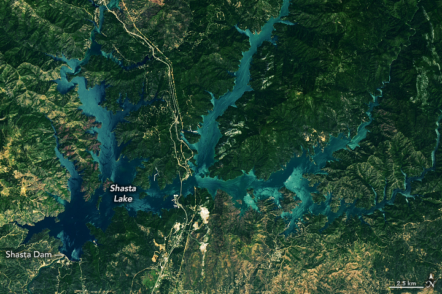
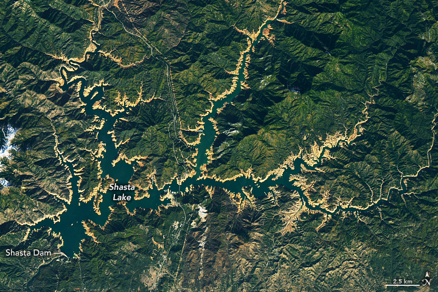

LANDSAT / FIELD STUDY 01
When Shasta
filled back in.
Slide across the shoreline. Then search other reservoirs for the same pattern of change.


Nov 18, 2022 · 31% fullMay 29, 2023 · 98% full
NASA Earth Observatory / Lauren Dauphin · USGS Landsat imagery · DWR storage figures
Find a shoreline match
Pick a Shasta window. Each candidate starts at zero so you can compare changes across lakes of different sizes.
● Shasta ● Matched reservoir
Inspect monthly observations
| Shasta month | Area km² | Storage AF | Match month | Area km² | Storage AF |
|---|